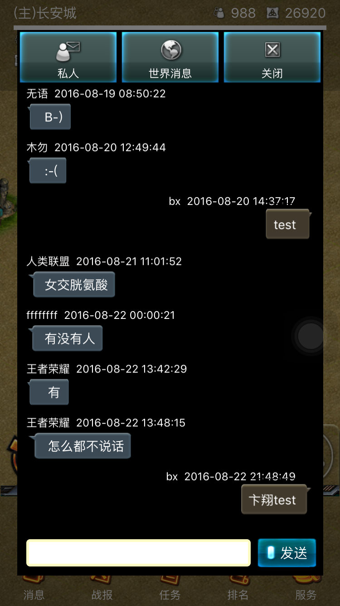
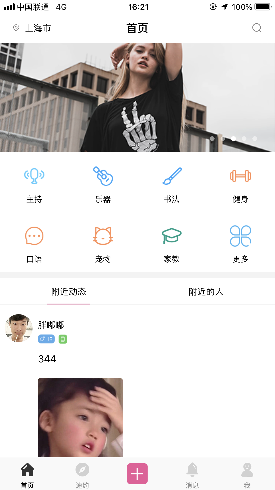

-
- Basic info. 基本信息
- 个人信息: 卞翔 / 男 / 29岁
- 教育经历: 本科 / 无锡太湖学院 / 电子信息工程系
- 英语水平: CET-4
- 常用ID: bianxiang
- Blog: http://blog.csdn.net/bx_jobs
- GitHub: https://www.github.com/bianxiang
-
- Experience. 项目与工作经验
上海笑溢网络科技有限公司（2017.1 - 至今）
-
工作内容
1. 负责面试招聘，开发团队的组建，项目进度把控，管理4人以上团队。
2. 负责《9点财经》项目iOS端全程开发（财经新闻）;
3. 负责《亿租亿评》项目iOS端全程开发（融资租赁）;
4. 负责《借把伞》项目iOS端全程开发（共享雨伞）;
5. 负责《萌租》项目iOS端全程开发（地图出租技能服务）;
6. 负责《糍粑》项目iOS端全程开发(扫码收银);
7. 负责《地球2037》游戏项目iOS端开发;
8. 负责《找死的金针菇》游戏项目iOS端开发;
大白科技发展(上海)有限公司（2013.4 - 2017.1）
-
工作内容
1. 2016年01月，参与需求分析，模块设计，页面设计等;
2. 2015年11月，与服务端交互，负责接口请求与返回格式的编写并与后台对接;
3. 2015年09月，负责iOS端的架构设计，编码规范;
4. 负责《大白助理》项目iOS端全程开发（AI语音日程提醒软件）;
5. 负责《zuber》项目iOS端全程开发（租房软件已拿到8000万投资）;
6. 负责《恒信人才》项目iOS端开发（91job义乌最大的人才招聘网）;
7. 负责《E-Task》项目iOS端全程开发（华东电脑企业工作日志管理系统）;
主要项目经验
-
《9点财经》AppStore
财经新闻类App。
-
主要技术:
1.富文本编辑器的封装，富文本转xml格式，xml转富文本以及富文本的显示
2.融云聊天
3.防外挂拼图滑块功能
4.图片浏览器
-
-
《亿租亿评》AppStore
融资租赁的App。
-
主要技术:
1.运用websocket聊天，推送
2.侧滑菜单
3.JPush远程推送
4.音频播放器、视频播放器
-
-
《糍粑》 AppStore
糍粑O2O项目,提供会员卡管理，提供扫码收银，公众号管理，会员管理，蓝牙打印等功能。
-
主要技术:
1.扫码收钱
2.采用蓝牙连接智能硬件技术
3.支付宝SDK接入
4.阿里巴巴iconFont
5.图标统计,PNChart等等

-
-
《地球2037》 AppStore
负责游戏UI界面的搭建，采用C++，OC，Swift混编。
 -
《找死的金针菇》Appstore AppStore
负责游戏界面swift与oc,c++交互，采用C++，OC，Swift混编。
-
《萌租》
这是一款地图出租技能服务的应用，为广大消费者、爱好者提供闲置技能服务的出租。
-
主要技术:
1.融云聊天
2.阿里人脸识别，实人认证
3.短视频录制，播放，滤镜，剪辑
4.高德地图SDK，锚点功能
5.微信支付，支付宝支付，apple内购

-
-
《大白助理》Appstore
这是一款日程互动提醒，AI智能私人助理的app。
-
主要技术:
1.环信聊天IM
2.科大讯飞语音识别
3.本地数据库存储
4.本地推送，远程推送
-
-
《zuber》Appstore
这是一款租房的app，免中介费，打倒中介的app，目前已经用户量上亿，已拿到投资。
-
主要技术:
融云聊天IM
视频播放
-
-
《迈界》 Appstore
负责整个项目所有页面的搭建以及部分功能的实现，类似大众点评，展现附近各种劲爆活动，限时特惠，是逛街购物的最佳伴侣。
-
- Skill. 技能清单
前端
-
iOS / Objective-C / Swift
1.精通Swift、OC、Dart，精通Swift与OC混编，有较强的自学能力，对用新技术开发充满激情，独立开发能力强，已独立开发20多个App。
2.熟练使用谷歌的flutter开发，同时生成iOS和android原生控件，熟练使用Dart语言开发，掌握flutter与Swift、OC、C++混编。
3.熟练使用Git版本控制工具SourceTree以及Trello、Teambition，pxcook，蓝湖 项目管理工具以及Skype等团队协作工具，熟练使用多种翻墙工具。
4.熟练使用websocket网络编程，融云SDK，环信SDK开发IM聊天功能，具备视频聊天经验。
5.熟练使用苹果APNS消息推送，熟练使用极光推送。
6.熟练使用bugly崩溃反馈信息解决app的bug,熟练使用growingIO监控用户行为,熟练使用fir.im和蒲公英上传内测版本。
7.掌握qq、微信、微博灯第三方登录自动登录，登录token过期处理，掌握服务器下发的数据进行动态布局。
8.具备富文本图文混排开发经验，熟练使用YYKit。
9.具备短视频录制开发经验。
10.具备人脸识别,实人认证开发经验。
10.熟练使用阿里巴巴icon font技术适配普通屏和Retina屏，解决多分辨率显示问题，降低设计师成本。
11.熟练使用CocoaPods第三方库管理工具以及Alcatraz第三方插件管理工具和Xcode静态库.a与使用脚本快速实现.framework的制作,掌握合并framework技术。
12.熟练掌握Apple开发者账号的注册流程、真机调试流程、ipa打包流程、上线发布的流程。
13.掌握js与OC的交互，熟练使用JSPatch越过Applestore审核，动态更新APP。
14.熟练使用HBuilder打包，最接近原生的h5打包方式。
15.熟练使用七牛SDK，阿里云OSS上传图片，Ping++集成各个平台支付功能，指纹支付，faceid支付等,掌握MD5、base64，RSA、DES加密方式。
16.熟练使用百度地图，腾讯地图，高德地图等SDK，自定义大头针标注搜索定位功能等等。
17.熟练掌握蓝牙技术，具备连接到蓝牙小票打印机开发经验。
18.熟练使用JSONModel以及MJExtension 模型-JSON互转工具以及SwiftyJSON解析框架，熟练使用Gdata解析XML。
19.熟练运用Pop、IQKeyboardManager、SDWebImage、MJRefresh、AFNetWorking（Swift中 Alamofire）进行get,post,delete请求等、FMDB、友盟统计及社会化组件、ShareSDK、YYKit等第三方库的使用，并将其封装成工具类，有较强的封装思想。
20.熟练运用MVC、MVVM、KVC、KVO、GCD单例、工厂方法等，。
21.熟练运用delegate、block(类似Swift中的闭包)、NSNotificationCenter通知传值并实现方法等。
22.掌握传感器，加速器，摇一摇等主流技术，掌握AR增强现实技术。
23.熟练掌握StoryBoard的使用，熟练使用xib定制cell并使用AutoLayout，以及使用Masonry自动布局纯代码开发适配。
24.熟练使用NSUserDefault单例，以及写Plist文件写入沙盒等数据持久化处理。
25.熟练运用支付宝，银联，微信等第三方支付。
26.熟练使用ZXing SDK以及系统自带的二维码扫描。
27.了解.net开发，安卓开发，熟悉C++基本语法，了解cocos2d-x的使用。
-
C++
熟悉C++基本语法
能运用模块化、面向对象的方式编程
了解 cocos2d-x 的使用
-
其他
熟悉日常编程中所使用的各种提高效率的工具以及团队协作工具
后端
-
C#
熟悉 C#基本语法
了解数据库的一些基本操作
其他
-
我是一个有趣的人，喜欢钻研各种技术，逻辑思维强，动手能力强，有较强的承受压力的能力，工作6年有余已独立完成大大小小20多个App。本人摩羯座,又称“工作狂””
严重强迫症，不能忍受界面一个像素的偏差，同样不能忍受代码格式一个空格的偏差
学习能力强，以上绝大多数的技能都是自学修得的
能够熟练使用 Markdown 进行写作

卞翔的简历
"Write the Code. Change the World."
-
- Contact. 联系方式
- 邮箱: bian16621007715@163.com
- 微信: qq1023537528
- 手机: 16621007715
- QQ: 1023537528
-
- Application. 应聘岗位
- iOS前端工程师
-
- Tech. 技能点
iOSSwiftObjective-CFlutterDartHTMLC++
我是一个充满活力、对前端由衷热爱、善于发现问题的iOS前端工程师。
我目前正在寻找iOS前端工程师岗位，希望借此机会为贵司献上我的一点绵薄之力，快招我到碗里来吧！
扫码下载简历: https://bianxiang.github.io/